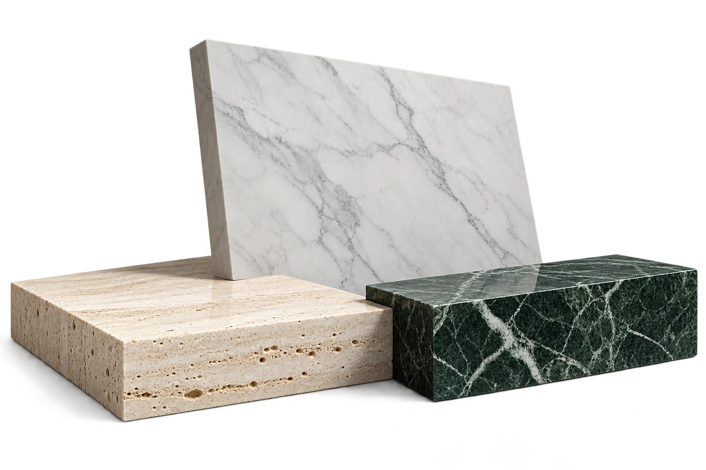
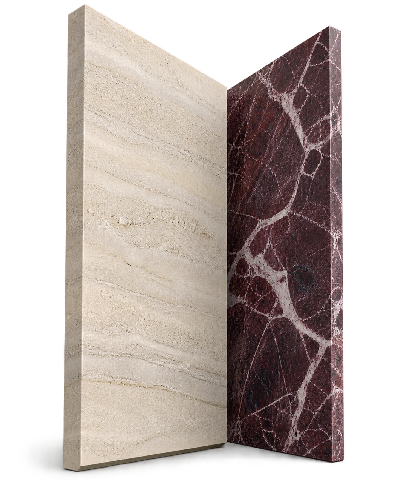
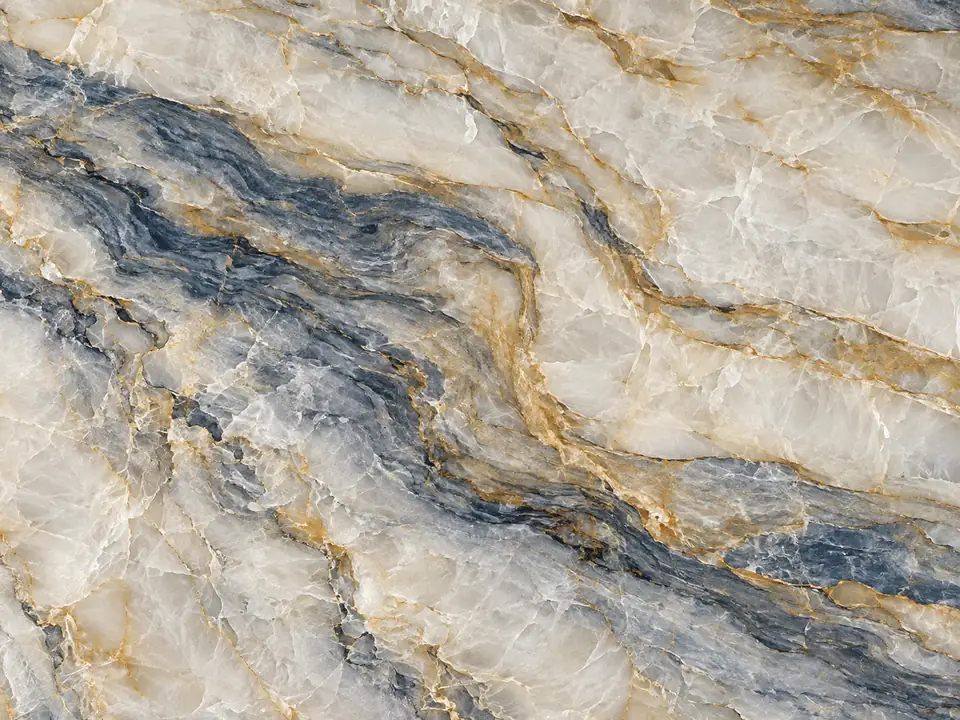
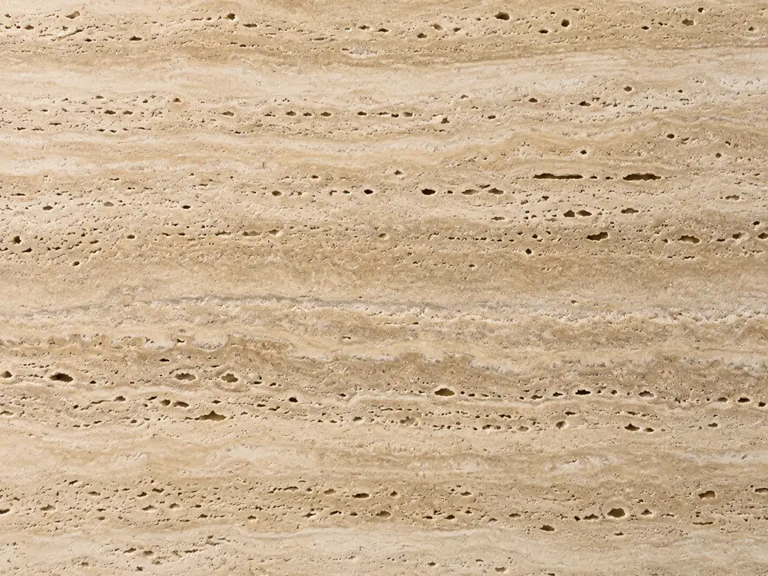
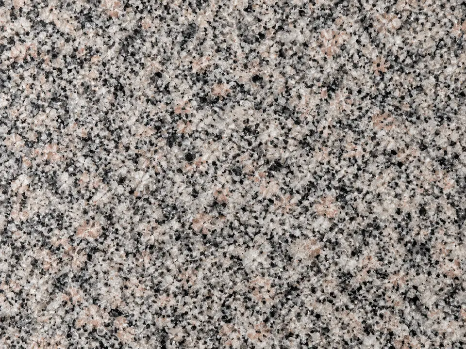
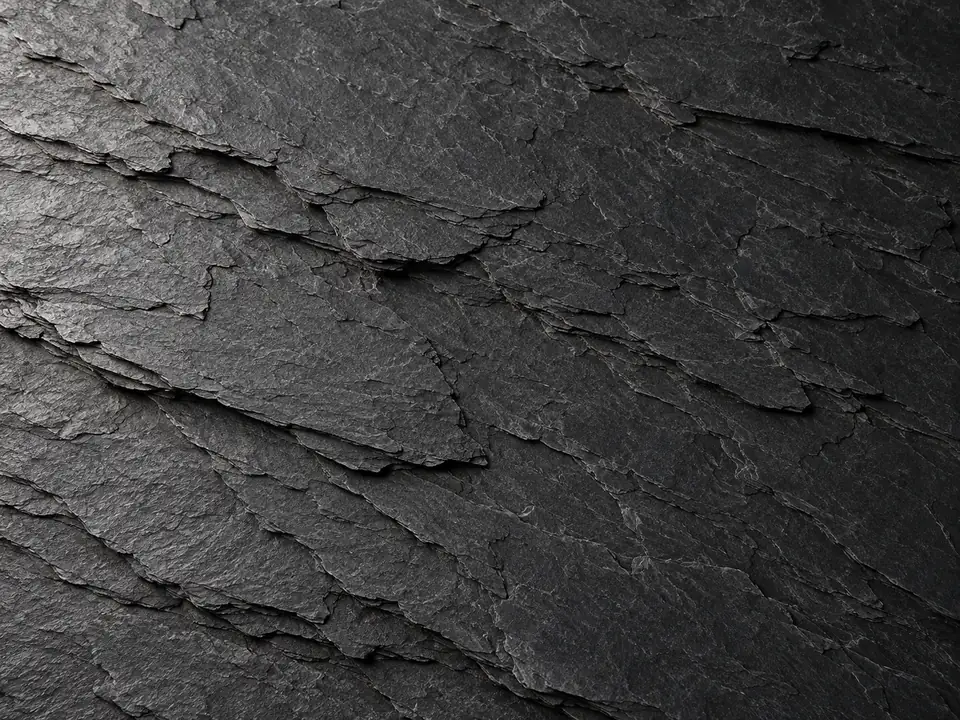

Inter Tight / Inter
Натуральный камень
для внутренней отделки
Подберём конкретные слэбы. Согласуем рисунок и раскладку. Изготовим по чертежам на собственном производстве.
Посмотреть на странице ↗
Рисунок. Плоскость. Объём.Подбираем конкретные слэбы.
Согласовываем рисунок и раскладку.
Изготовление по чертежам
на собственном производстве.
От конкретного слэба
до изделия по чертежу.

Согласуем рисунок
и раскладку.
Изготовим по чертежам
на собственном производстве.
Подберём конкретные слэбы.
Согласуем рисунок и раскладку
перед изготовлением.



Цвет и рисунок
выбирают на конкретном
слэбе.



Уже есть чертежи?
Пришлите их для подбора и расчёта.
Сравнение на одинаковом тексте
Натуральный камень
для внутренней отделки
Подберём конкретные слэбы. Согласуем рисунок и раскладку. Изготовим по чертежам на собственном производстве.
Посмотреть на странице ↗Натуральный камень
для внутренней отделки
Подберём конкретные слэбы. Согласуем рисунок и раскладку. Изготовим по чертежам на собственном производстве.
Посмотреть на странице ↗